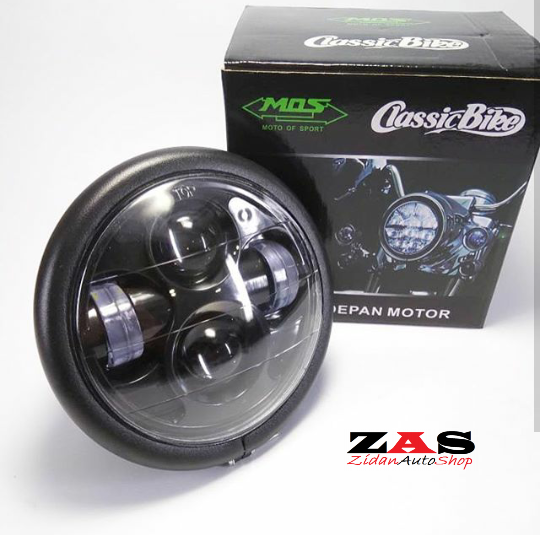
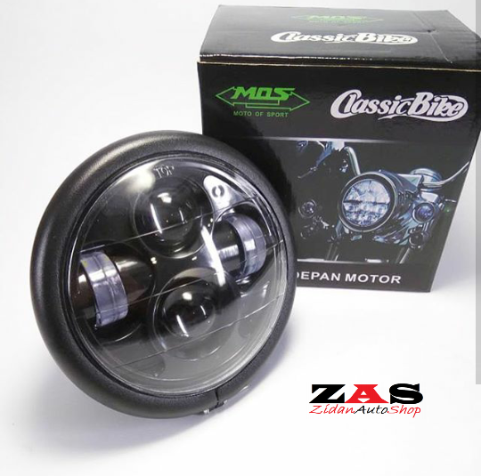
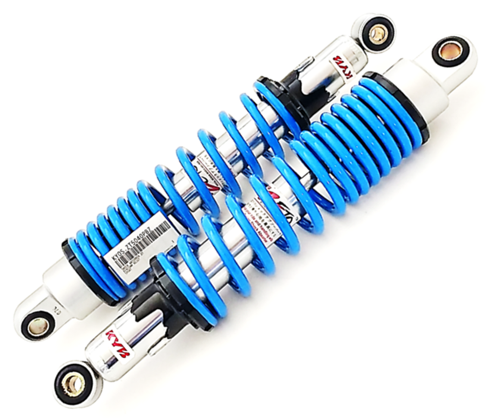
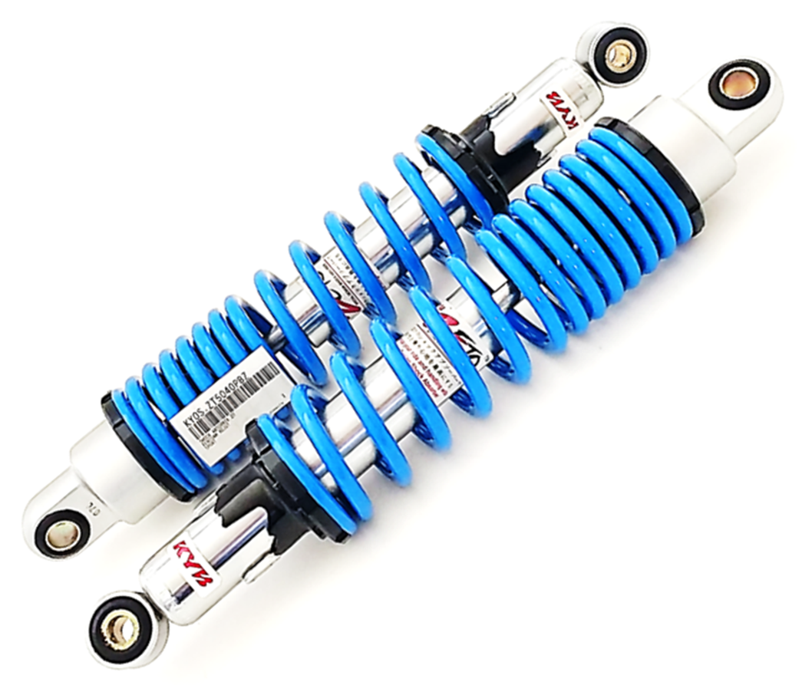
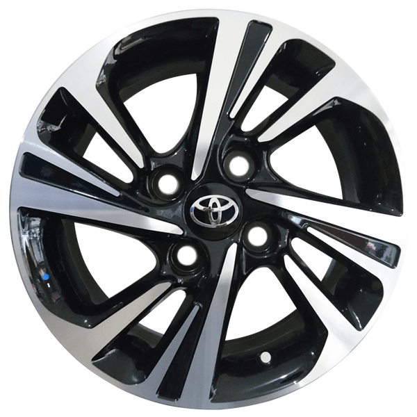
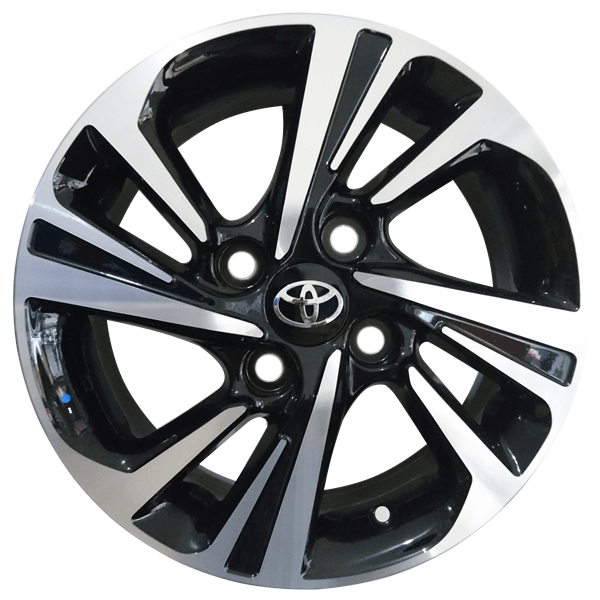

1.LAMPU

Kelebihan modifikasi lampu motor menggunakan proyektor LED OEM atau copotan dari proyektor mobil adalah selain terang juga punya cut-off atau garis pembatas terang agar tidak menyoroti pengendara lain. Sehingga cahaya tidak menyebar kemana mana.
Berbeda dengan HID yang membuat silau serta umur yang lebih pendek, lebih banyak maintenance, dan umur aki berkurang.Umur aki lebih pendek dan juga lebih banyak maintenance. Kalau proyektor LED OEM aman dan pasti barang lebih awet hingga 5 tahun bebas maintenance, katanya.
Meski begitu, HID juga punya kelebihan jika ingin upgrade dibuat semakin terang cukup ganti ballast dan bohlam, tapi konsekuensinya partnya akan semakin cepat rusak seperti mangkuk, bohlam, dan ballast.
Soal harga, Abdigas Motor membanderol proyektor LED OEM Toyota Fortuner VRZ lebih mahal yakni Rp 2,65 juta. Ini sudah paket yang termasuk eagle eye, electric leveling, dan retro fit sudah full plastik. Sedangkan proyektor HID kualitas bagus dengan paket yang sama dibanderol sekitar Rp 2 juta sudah dengan jasa pasang.

Meski begitu, HID juga punya kelebihan jika ingin upgrade dibuat semakin terang cukup ganti ballast dan bohlam, tapi konsekuensinya partnya akan semakin cepat rusak seperti mangkuk, bohlam, dan ballast.
Soal harga, Abdigas Motor membanderol proyektor LED OEM Toyota Fortuner VRZ lebih mahal yakni Rp 2,65 juta. Ini sudah paket yang termasuk eagle eye, electric leveling, dan retro fit sudah full plastik. Sedangkan proyektor HID kualitas bagus dengan paket yang sama dibanderol sekitar Rp 2 juta sudah dengan jasa pasang.
2.SHOCKBREAKEAR
Jenis - Jenis ShockBreaker
Kalau dilihat dari cara kerjanya, ada dua macam shockbrekaer, yakni tipe single action dan tipe double action.
1. Single Action Shock
Kalau tipe kedua, bisa menyerap guncangan baik guncangan naik atau guncangan turun (saat ekspansi dan saat kompresi). Pada tipe ini terdapat dua buah saluran didalam piston yang memiliki katup. Katup ini akan terbukan dan tertutup secara otomatis sesuai arah aliran fluida.

1. Single Action Shock
Sesuai namanya, tipe ini hanya memiliki satu arah redaman. Artinya, hanya bisa menyerap satu arah goncangan, entah itu goncangan naik atau goncangan turun (umumnya saat ekspansi saja). Konstruksinya, sangat sederhana. Dimana ada satu orifice dan satu lagi saluran transfer.
2. Doubel Action ShockKalau tipe kedua, bisa menyerap guncangan baik guncangan naik atau guncangan turun (saat ekspansi dan saat kompresi). Pada tipe ini terdapat dua buah saluran didalam piston yang memiliki katup. Katup ini akan terbukan dan tertutup secara otomatis sesuai arah aliran fluida.
3.VELG

Nama velg mobil terbaik asal Prancis ini merupakan singkatan dari Baumgartner Brand Schiltach, sang penemu velg ini. Ada beberapa seri velg BBS, yakni BBSCHR, BBS F1, dan BBS LM.
Di Indonesia, ukuran velg BBS yang banyak tersedia adalah ukuran 15, 16, 17, dan 19 inci. Umumnya, velg BBS digunakan oleh para pecinta modifikasi Hellaflush. Alasannya, velg mobil BBS memiliki motif yang lebih rapat dan sela-sela yang lebih kecil, yang membuat para pecinta Hellaflush menggilai velg ini.

Di Indonesia, ukuran velg BBS yang banyak tersedia adalah ukuran 15, 16, 17, dan 19 inci. Umumnya, velg BBS digunakan oleh para pecinta modifikasi Hellaflush. Alasannya, velg mobil BBS memiliki motif yang lebih rapat dan sela-sela yang lebih kecil, yang membuat para pecinta Hellaflush menggilai velg ini.